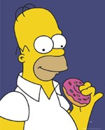

Per capire la vita è necessario essere filosofi, studiare filosofia è indispensabile. Questo almeno inizialmente, poi ti accorgi che ha a che fare di più con la psicologia, e studi quella. Ma è tutto così robotico. Coma la biologia, causa ed effetto. Invece alla fine la vita è comica e basta. E' ironica e surreale. E si deve diventare comici per poterla sopportare meglio. Ehi! Se ridere non è filosofia, allora cos'è? E così ritorniamo all'inizio... E' una spirale senza inizio, è una sfera con un buco al centro, ecco cos'è la vita. E' una ciambella alla cicuta.